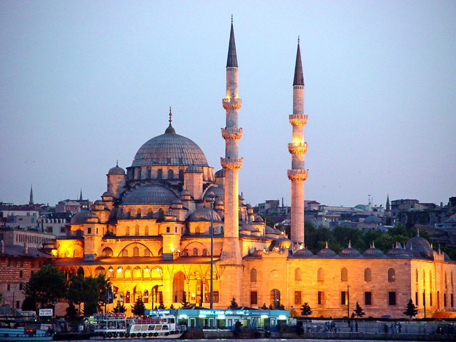
.
Construction of the mosque began in 1597 on the orders of Sultana Safiye, who was the wife of Sultan Murad III and later Valide Sultan (Queen Mother) of Sultan Mehmed III, hence its original formal name Valide Sultan Mosque. Now named the New Mosque after its partial reconstruction and completion between 1660 and 1665, it is situated on the Golden Horn, at the southern end of the Galata Bridge.
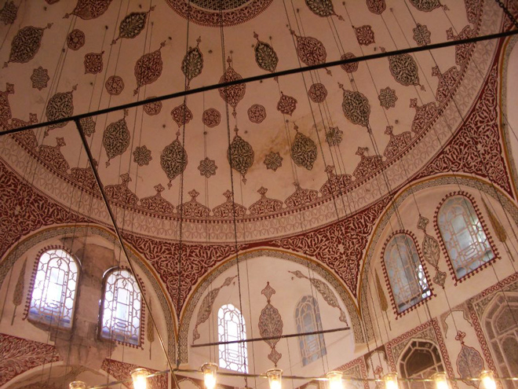
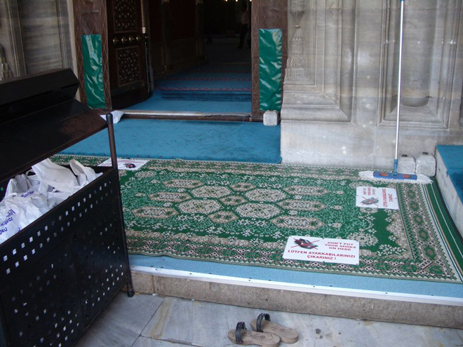
View from the mosque over the Galata Bridge.
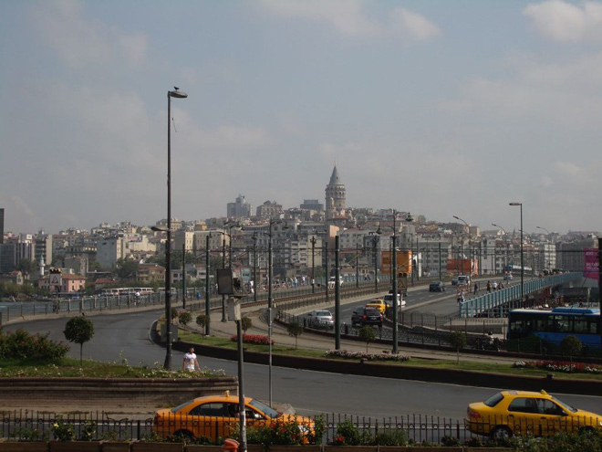
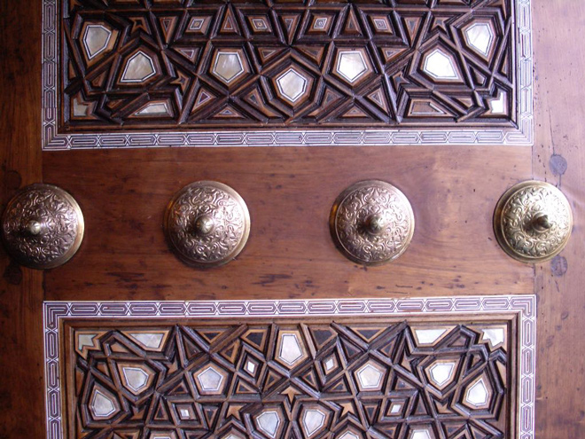
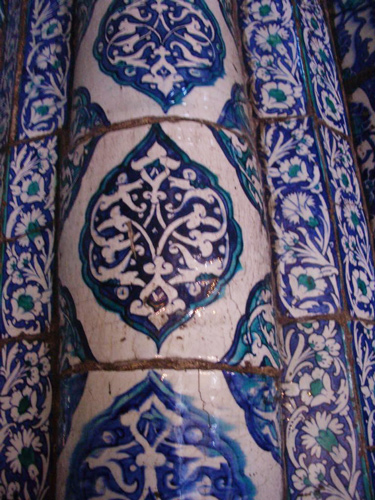
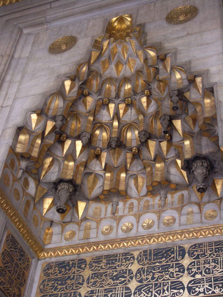
The mosque seems to be a major attraction for the local pigeons which cover every available surface of the walls and niches of the structure. Little old ladies sell bird feed for them from kiosks which look a bit like confessional boxes.
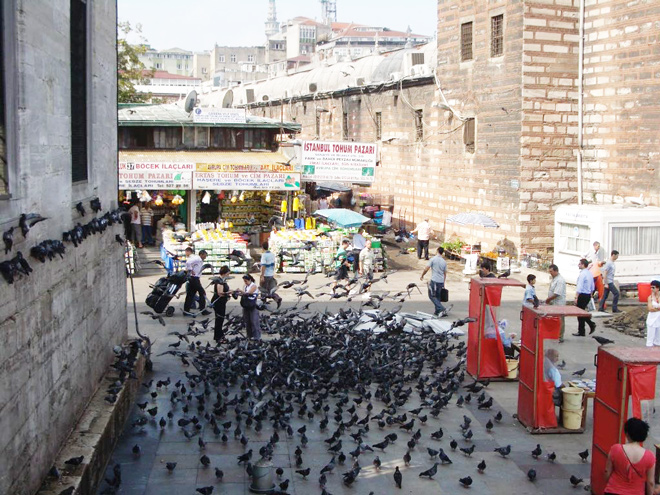
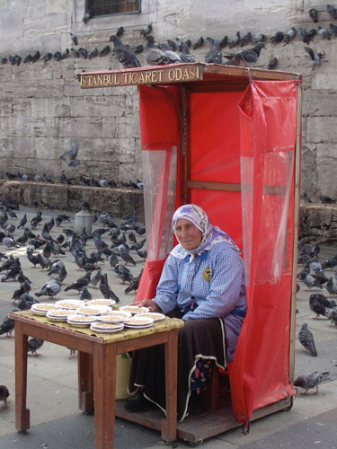
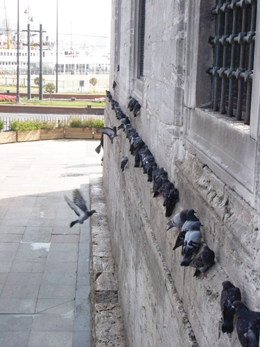
Next to the mosque is the türbe (mausoleum) which holds the graves of the Valide Sultan Turhan Hatice, her son Mehmed IV as well as five later sultans (Mustafa II, Ahmed II, Mahmud I, Osman III and Murad V) and various members of the court.
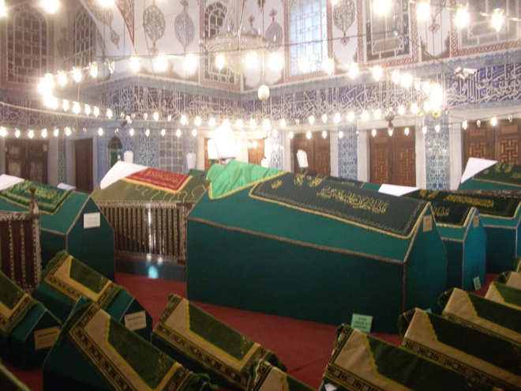
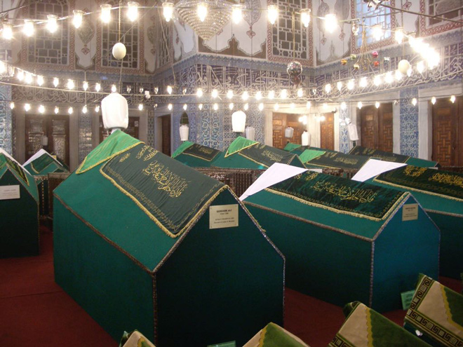
As with other imperial mosques in Istanbul, the New Mosque was designed as a külliye, or complex with adjacent structures to service both religious and cultural needs. The original complex consisted of the mosque itself, a hospital, primary school and market. The large L-shaped market survives today as the Spice Bazaar (also known as the 'Egyptian Bazaar').
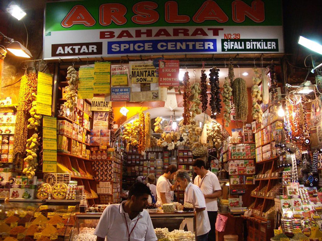
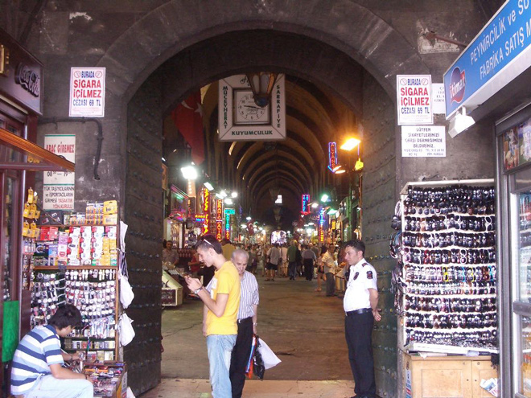